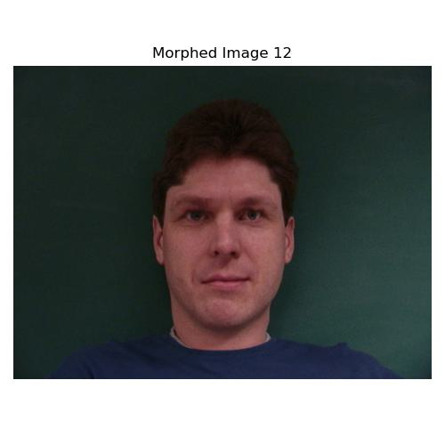
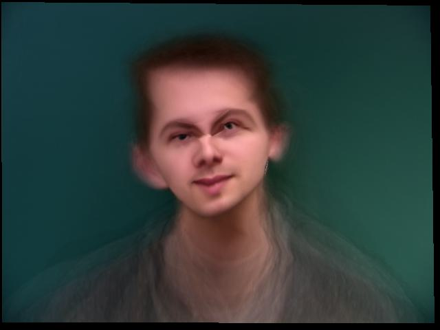
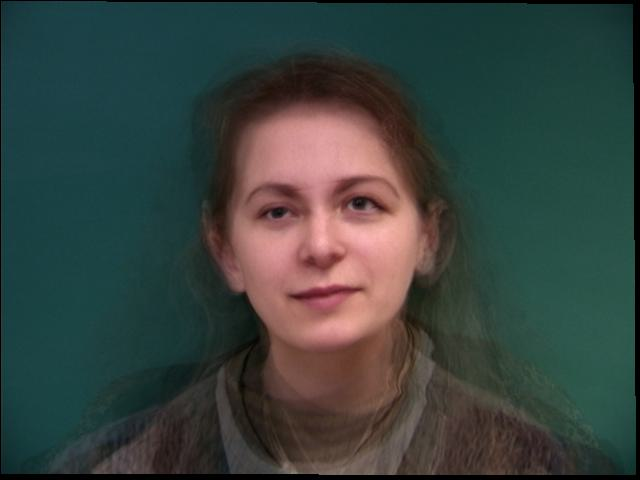

Overview
In this project, I had a lot of fun morphing pictures and labeling correspondence points! The project had 5 primary tasks: triangulation of two personally selected images, selecting correspondences between the images, and using Delaunay triangulation, affine transformations, and cross-dissolving to warp faces into the shapes of other faces. Additionally, I created morph animations between the faces. The project also involved computing the mean face of a population and using this to extrapolate and create caricatures.
Part 1: Defining Correspondences
To begin, I cropped and resized images of Rafael Nadal and Roger Federer to match their dimensions and aspect ratio. Using the provided student made online tool, which came in quite handy, I defined 45 correspondence points on each image and added the four corners, resulting in 49 points per image. I then used the Delaunay triangulation algorithm to ensure all pixels were enclosed within triangles.
Nadal's Image with Delaunay Triangulation
Federer's Image with Delaunay Triangulation
Using these correspondence points, I generated a Delaunay triangulation at the mean of the two sets of points to prepare for further transformations.
Part 2: Computing the "Mid-way Face"
Before computing the full morph sequence, I first computed the mid-way face between Rafael Nadal and Roger Federer. This involved three steps:
- Computing the average shape, which is the average of each keypoint location in both faces.
- Warping both Nadal and Federer's faces into the computed average shape.
- Averaging the colors of both images after warping.
The main challenge here was implementing an affine warp for each triangle in the Delaunay triangulation, which required calculating an affine transformation matrix A for each triangle using the points in the original images and the corresponding points in the average shape:
A = computeAffine(tri1_pts, tri2_pts)
These transformation matrices were then applied to warp the pixels from the original images into the new shape. Finally, I averaged the warped images to produce the mid-way face.
Nadal's Original Image
Federer's Original Image
Mid-way Face

Part 3: The Morph Sequence
In this part, I created a smooth morph sequence between the faces of Rafael Nadal and Roger Federer. The process involved:
- Warping both images into intermediate shapes controlled by a parameter
warp_frac.
- Cross-dissolving the colors between the two images based on a parameter
dissolve_frac.
I wrote a function morphed_im = morph(im1, im2, im1_pts, im2_pts, tri, warp_frac, dissolve_frac); which produced the warp and cross-dissolve between Nadal's and Federer's images. The morph sequence consisted of 45 frames, with a duration of 50 milliseconds per frame. Each frame smoothly transitions from Nadal's face to Federer's face by gradually shifting shape and color.
The parameters warp_frac and dissolve_frac ranged from 0 to 1 across the frames. At the beginning, both parameters were set to 0, meaning the frame showed Nadal's face in its original shape and color. By the final frame, both parameters were set to 1, fully transitioning into Nadal's face from federer's starting face.
Final Morphing Sequence

To view the morph sequence, see the GIF above. If you'd like to watch the full animation, you can also view it as a YouTube video.
Part 4: The "Mean Face" of a Population
I used the Dane dataset, which consists of 37 images (30 male and 7 female). After extracting the correspondence points from the respective files, I computed the average shapes for all faces, as well as for male and female faces separately. I then warped each face to the overall average shape. Below, I present examples from the original dataset alongside their appearances after being warped to the average Danish face shape.
Example Faces and their Warped Versions
Original Face 1
Warped to Average Shape 1
Original Face 2
Warped to Average Shape 2

Original Face 3
Warped to Average Shape 3
Original Face 4
Warped to Average Shape 4
Mean Faces of the Population
Below are the mean faces computed for the male, female, and combined population of Danish individuals from the dataset.
Mean Male Face
Mean Female Face
Mean Face of All Danes
Personal Warps
In addition to the average faces of the population, I also morphed my own face into the average Danish geometry and warped the average Danish face into my geometry.
Average Dane onto Me

Me Warped to Average Dane
Part 5: Caricatures - Extrapolating from the Mean
In this part, I created caricatures of my face by extrapolating from the population mean calculated in Part 4. By varying the alpha parameter beyond the typical range of [0, 1], I could either exaggerate my own facial features (with alpha < 0) or exaggerate the average face's features (with alpha > 1). Below are some examples of the caricatures I generated at different alpha values.
Caricature with alpha = 0
Caricature with alpha = 0.25
Caricature with alpha = 0.5
Caricature with alpha = 0.75
Caricature with alpha = 1

Part 6: Bells and Whistles - Gender Change
For the first "bells and whistles" task, I experimented with changing the gender of my friend’s face using an average Chinese male face I found on the web. After rescaling and resizing both images, I selected correspondence points and tried three different approaches to morphing the faces:
- Only morphing the shape (warp): Warping my friend’s face into the shape of the average Chinese male face.
- Only morphing the appearance (cross-dissolve): Cross-dissolving the appearance while keeping my friend’s face shape intact.
- Morphing both shape and appearance: Combining both warping and cross-dissolving to morph the shape and appearance simultaneously.
Results
Only Shape Morph
Only Appearance Morph

Morphing Both Shape and Appearance
Additional Experiment: PCA and Eigen-exaggerated Faces
In this experiment, I used PCA to analyze facial variations and create eigenfaces. Eigenfaces capture the most important features across the dataset. By exaggerating principal components, I generated caricatures that emphasize distinctive facial features. I did this by simply adding to the original picture a scaled version of the first principal component, which already shares the same dimensions as the flattened original image, directly to the original picture.
Results
Eigenface 1
Eigenface 2
Eigenface 3
Caricature